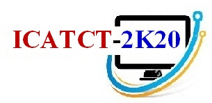
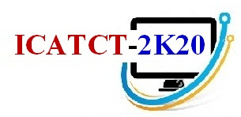
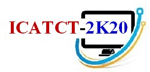

International conference on Advent Trends in Computer Technology 2020
JECRC Foundation, Jaipur, Rajasthan
Organised By :
 



Organised By :

The International Conference on Advent Trends and Computer Technologies(ICATCT-2K20) is the premier conference for the presentation of new technologies, advances and research outcomes in the fields of Computer Science, Information Technology and associated Engineering Application, to be held in the royal Rajasthan capital city, Jaipur, India.
ICATCT-2K20 is being organized to bring together the students, scholars, researchers, academicians and industry persons to deliberate on the computer science related advancement and issues concern to computer world and research aspects of emerging technologies and applications.
Original unpublished manuscripts, and not currently under review in another journal or conference, are solicited in relevant areas. For more details, Please visit Conference webpage www.jecrcconference.in/icatct2020.
Venue: Jaipur Engineering College & Research Centre, Jaipur
Dates of Conference: April 3 rd - 4 th, 2020
Submission Guidelines:
We are pleased to invite you to submit original contributions to
ICATCT-2K20 via the official submission system for the conference
https://easychair.org/conferences/?conf=icatct2k20. This can include, technical and experimental, theoretical,
conceptual, or a survey in the form of Position Paper/ Fast Abstracts/
Poster Papers/Tool Demonstrations/ Industrial Contributions.
Articles submitted to the conference should report original,
previously unpublished research results, experimental or theoretical
offering novel research contributions in any aspect of Expert
Applications & Security and must not be under consideration for
publication elsewhere. Submissions will be double blind peer reviewed
and evaluated based on originality, technical and/ or research
content/depth, correctness, relevance to conference, contributions,
and readability. The full paper submissions will be chosen based on
technical merit, interest, applicability and how well they fit a
coherent and balanced technical program.
Topics of interests should fall under one or more of the conference
tracks:
| Track 1: Communication, Network and Security |
|
|---|---|
| Track 2: Smart IT Infrastructure and Computation |
|
| Track 3: Computational and Designing Engineering |
|
| Track 4: Computer Engineering and Other Disciplines |
|
| Track 5: E-Governance and Social media |
|
| Track 6: Latest Technology and Trends |
|
| Track 7: Intelligent System |
|